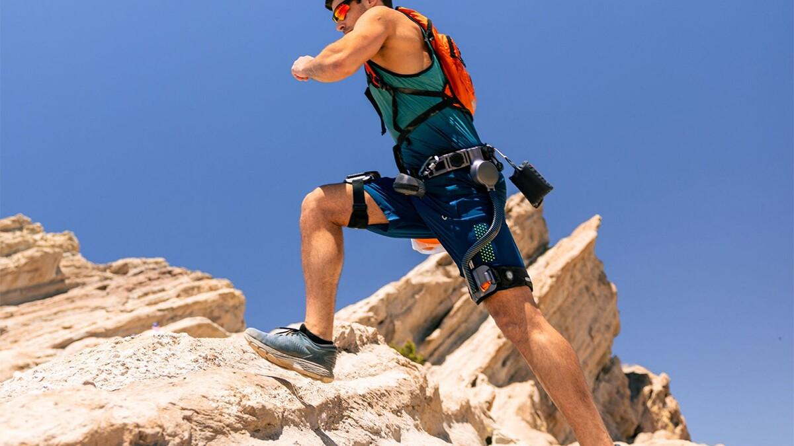
AI-powered climbing exoskeleton
Benefits:
- Helps reduce leg fatigue on long hikes.
- Provides additional assistance on steep terrain.
- Can help climbers conserve energy on demanding journeys.
History For 52 years, Alpine Ascents has inspired a passion for mountain exploration. Our journey began with a vision to make extraordinary adventures accessible. Over the decades, we have built a legacy of exploration and discovery. Our expeditions now span 32 countries worldwide. We have connected adventurers through unforgettable mountain experiences. Every journey reflects our commitment to safety and excellence. Our history is built on courage, teamwork, and determination. Today, we celebrate 52 years of adventure and achievement.
We aim to explore new destinations and create greater opportunities. Our future focuses on innovation and responsible mountaineering. We strive to make every expedition safer and more memorable. We are committed to protecting the natural beauty of the mountains. We continue to inspire the next generation of explorers. Our vision is to expand our global reach and impact.

Benefits:
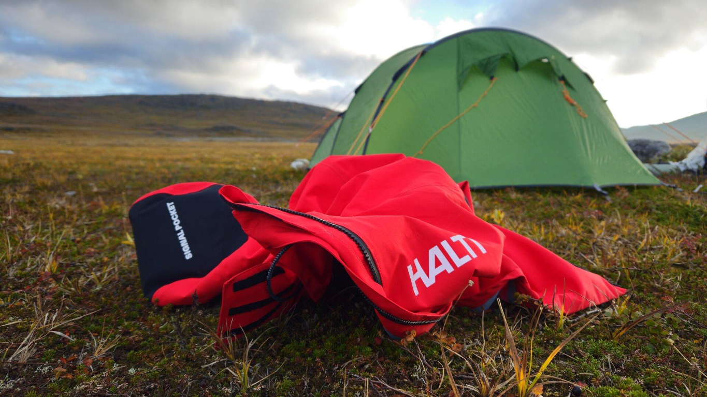
Benefits:
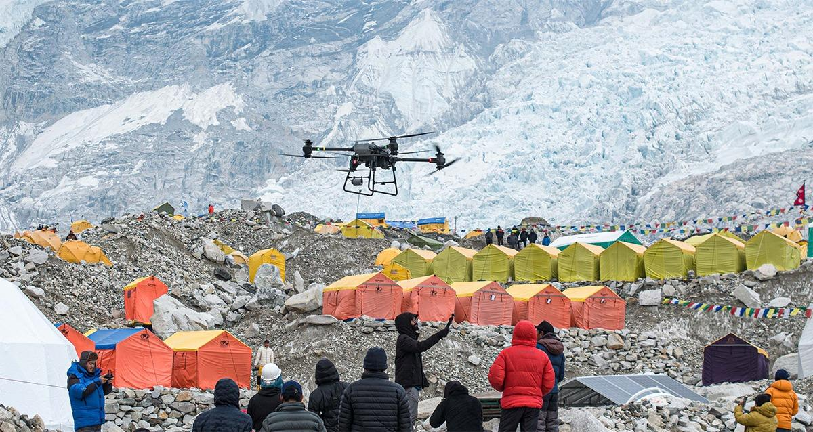
Benefits:
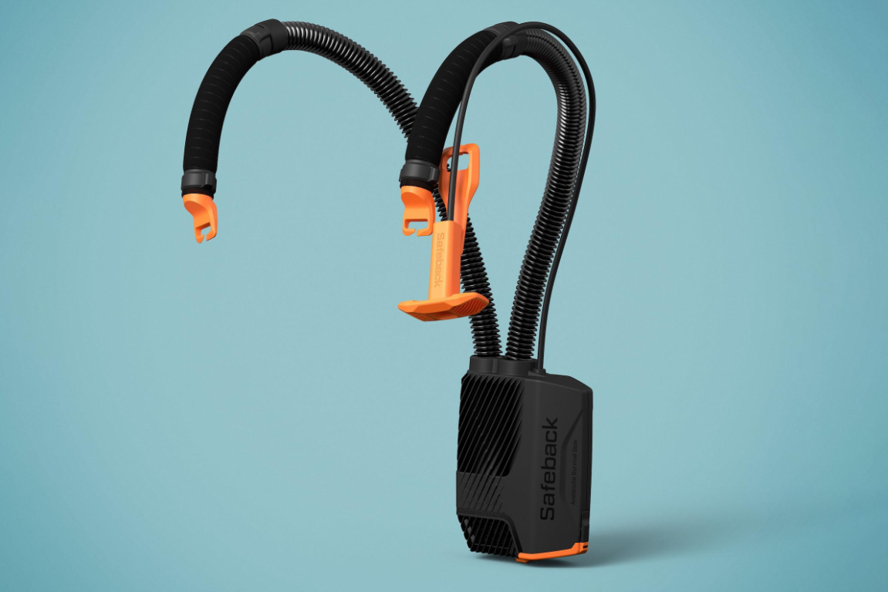
Benefits:
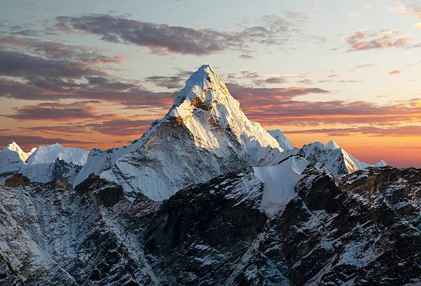

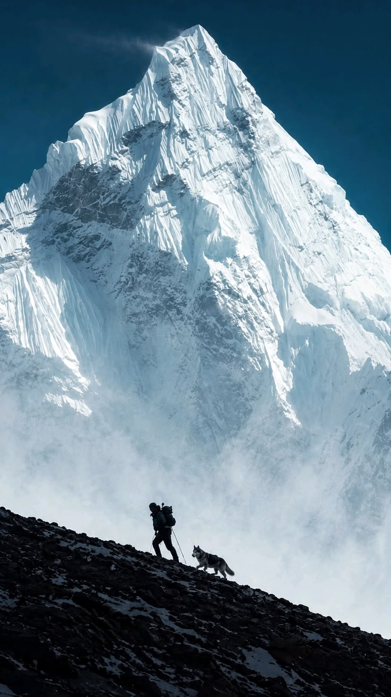
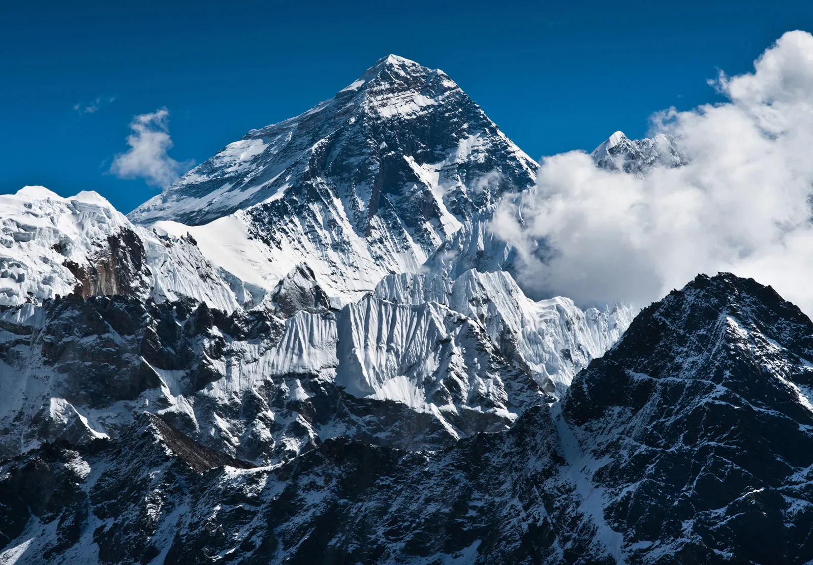
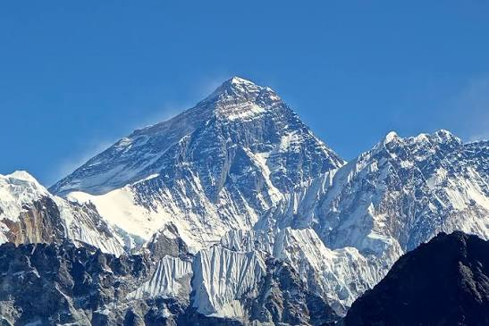
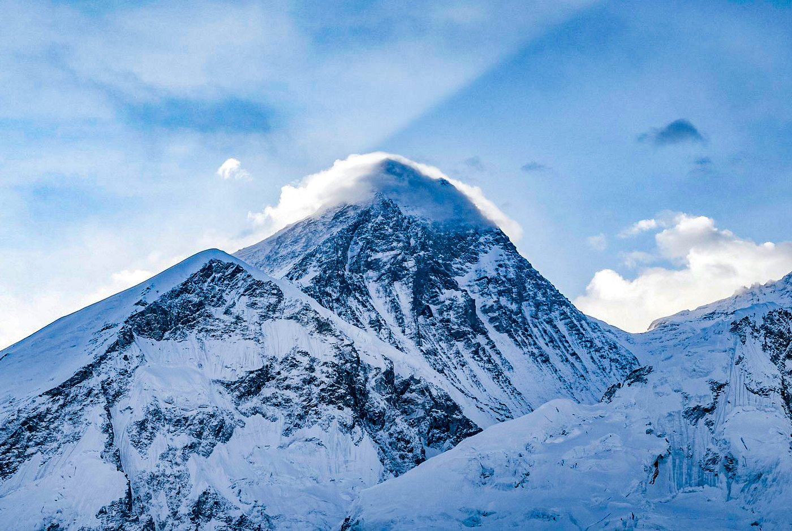


Mountaineering has a rich history of extraordinary achievements and world records. Mount Everest, standing at 8,848.86 metres, is the highest mountain above sea level. Sir Edmund Hillary and Tenzing Norgay made the first confirmed successful ascent of Everest in 1953. Reinhold Messner became the first person to climb all 14 mountains above 8,000 metres without supplemental oxygen. Junko Tabei became the first woman to summit Mount Everest in 1975. Nirmal Purja completed all 14 eight-thousanders in just six months and six days in 2019. These achievements demonstrate courage, determination and exceptional mountaineering skills.
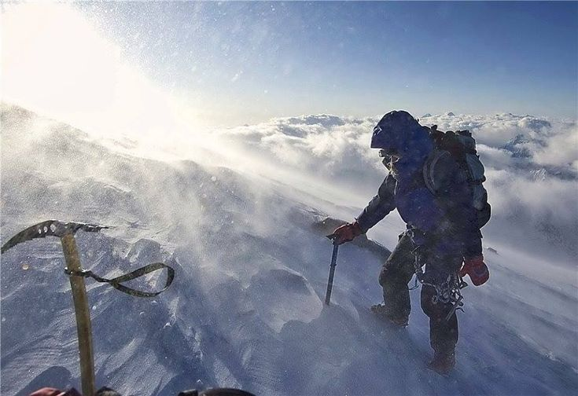
Mountaineering involves several natural and environmental hazards that can put climbers' lives at risk. Avalanches are among the most dangerous threats, as large amounts of snow can suddenly slide down mountains. Rockfalls and landslides can cause serious injuries during climbing. Extreme cold, frostbite and hypothermia are common risks at high altitudes. Strong winds and sudden snowstorms can reduce visibility and make climbing difficult. Altitude sickness can occur when the body does not receive enough oxygen at high elevations. Crevasses and slippery ice surfaces can also lead to dangerous falls. Proper training, weather awareness and safety equipment help reduce these risks.
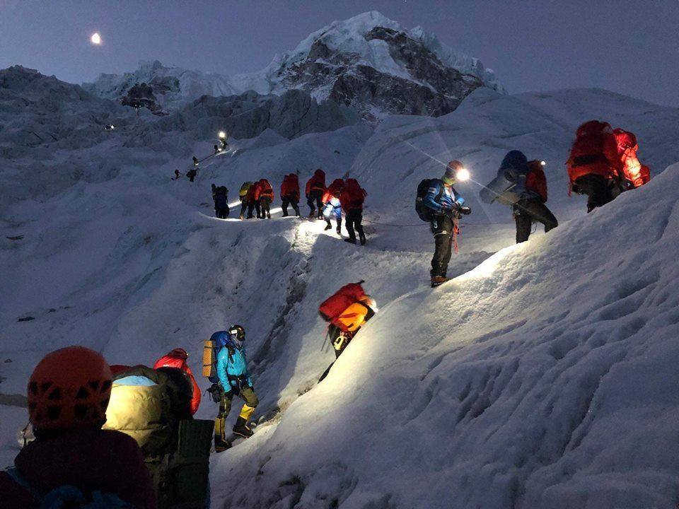
Sheltering is an important survival practice that protects mountaineers from harsh mountain weather and environmental conditions. Mountain shelters include expedition tents, mountain huts, caves and emergency bivouac shelters. These shelters protect climbers from heavy snowfall, strong winds, rain and extreme cold. A safe shelter should be established on stable ground, away from avalanche paths and falling rocks. Insulated sleeping bags and thermal blankets help maintain body heat. Climbers should carry emergency shelter equipment during long expeditions. Proper ventilation is important when using tents or portable heating equipment. Choosing a secure shelter can improve comfort, safety and survival during mountain expeditions.

Mountaineering involves different types of climbing activities depending on the terrain, difficulty and environment. Alpine mountaineering involves climbing high mountains using different climbing skills and equipment. Rock climbing focuses on ascending steep rock surfaces using ropes and protective gear. Ice climbing involves climbing frozen waterfalls and icy mountain surfaces with special tools. Expedition mountaineering includes long journeys to remote and extremely high mountains. High-altitude trekking involves walking through mountainous regions at significant elevations. Mixed climbing combines rock, snow and ice climbing techniques. Each type requires physical fitness, technical knowledge, proper equipment and careful preparation.

Mountaineering techniques are essential skills that help climbers travel safely through difficult mountain environments. Rope handling and knot tying are important for securing climbers during challenging climbs. Belaying helps protect climbers by controlling the rope and reducing the risk of falling. Rappelling is a technique used to descend steep mountain surfaces with ropes. Ice axe techniques help climbers maintain balance and stop themselves from sliding on snow and ice. Crampons provide grip while walking or climbing on frozen surfaces. Navigation skills help mountaineers follow routes and avoid dangerous areas. Proper acclimatization, teamwork and weather assessment are also important for successful mountain expeditions.
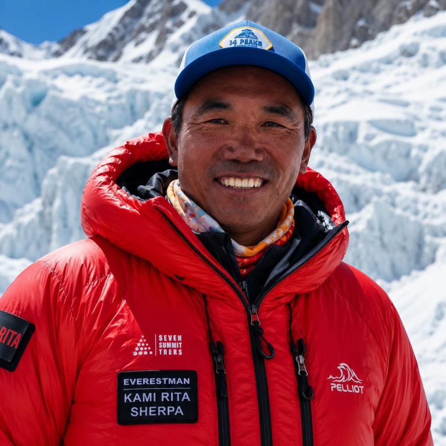
James is an experienced mountaineer specializing in high-altitude expeditions across the Himalayas. He leads challenging climbs with a strong focus on safety, teamwork and preparation.
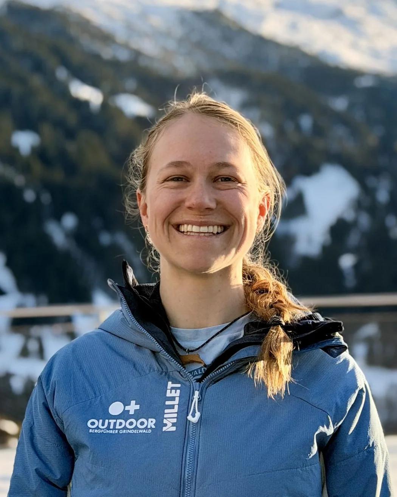
Sarah specializes in alpine climbing, glacier travel and technical mountain routes. She is passionate about helping climbers develop confidence and mountain skills.
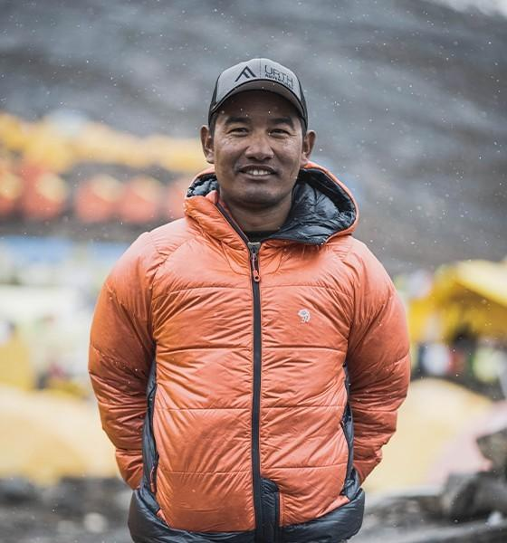
Tenzing brings extensive Himalayan expedition experience, specializing in altitude acclimatization, route planning and technical climbing support.
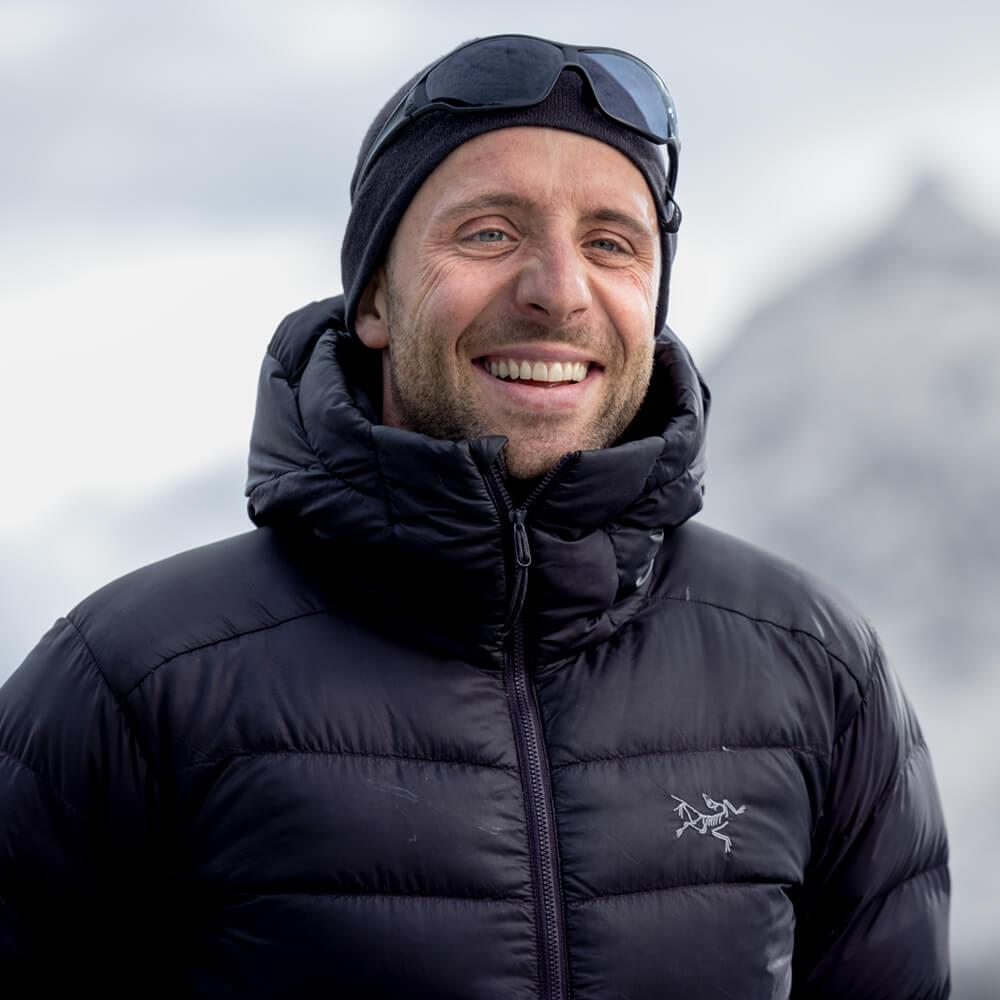
Daniel specializes in rock climbing, ice climbing and technical alpine routes. He focuses on building safe, memorable experiences for climbers of different skill levels.
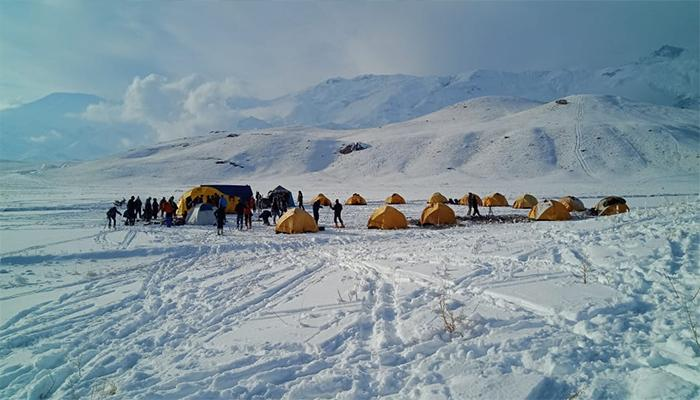
Location: Qaqlasht Valley, Chitral, Pakistan
Participants: 50
Achievement: Nine participants successfully climbed a small peak.
The camp brought together 50 young participants from different regions of Pakistan for winter sports and basic mountaineering training. Under the guidance of experienced trainers, participants learned skiing, climbing techniques and essential rope knots. A team of nine participants, including four girls, successfully reached a nearby peak through steep, snow-covered terrain.
Key outcomes: Practical climbing experience, confidence, teamwork and increased youth participation in winter sports.
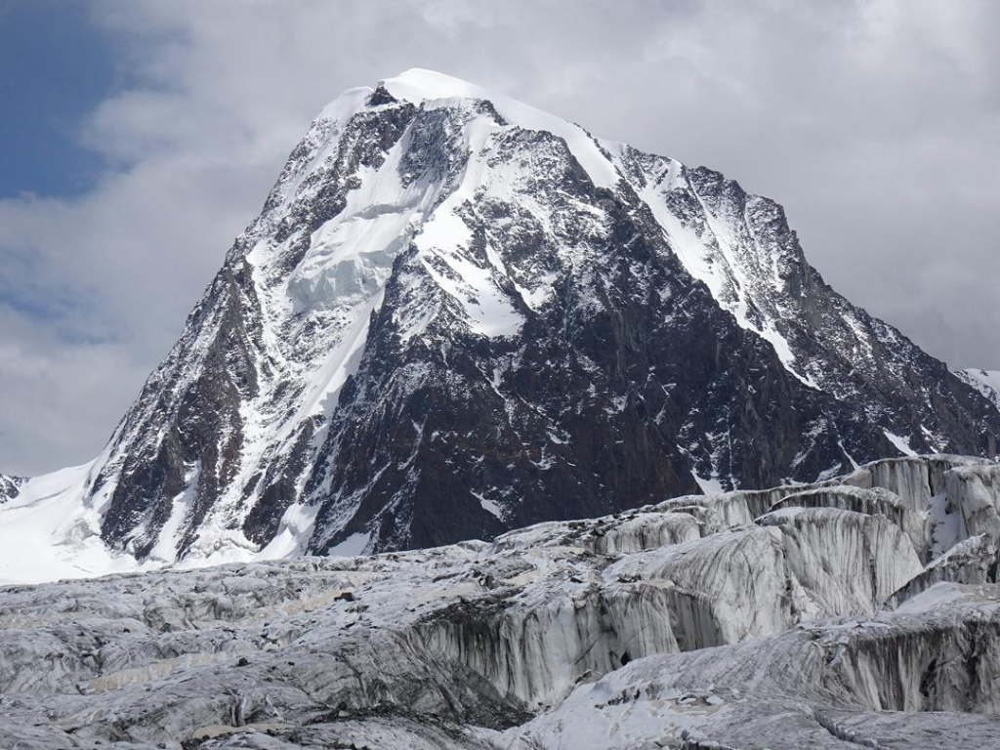
Location: Hindu Raj Range, Pakistan
Team: Nine young mountaineers
Achievement: Successful ascent of Thalo Zom (6,050 m).
A team of nine young mountaineers from Chitral successfully reached the summit of Thalo Zom in July 2025. After comprehensive preparation and technical training, the climbers navigated glaciers, steep rock faces and challenging alpine terrain. Every member returned safely, making the expedition an important achievement for local mountaineering.
Key outcomes: Technical climbing experience, self-reliance, leadership and stronger local mountaineering skills.
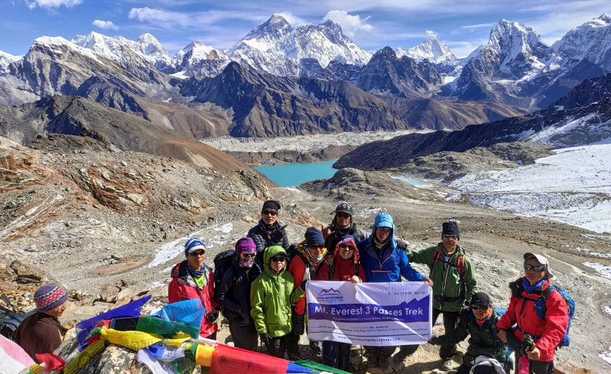
Location: Khumbu Region, Nepal
Duration: 21 days
Achievement: Team successfully reached Everest Base Camp.
A 2026 expedition team undertook a demanding Himalayan trekking challenge across the Everest region. Severe weather and environmental risks required the team to change its original route. Through careful planning, teamwork and disciplined decision-making, participants adapted their journey and successfully reached Everest Base Camp at 5,364 metres.
Key outcomes: Adaptability, resilience, high-altitude experience and responsible decision-making.
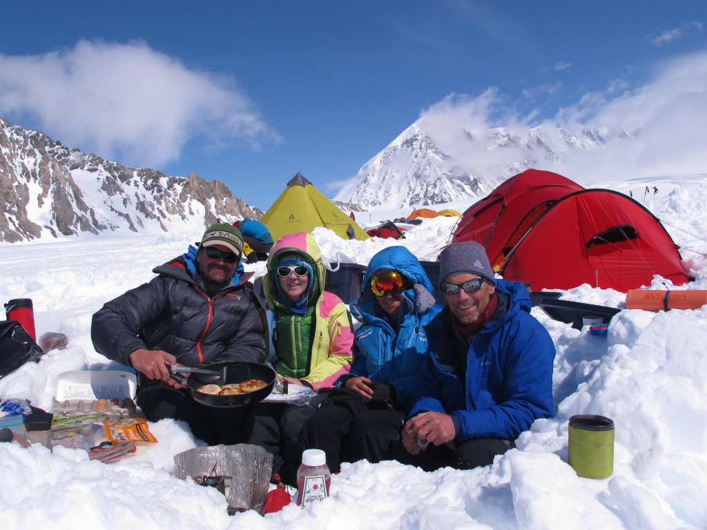
Location: Saint Elias Mountains, Yukon, Canada
Team: 12 participants
Achievement: Leadership and teamwork objectives achieved.
In May 2025, a 12-member expedition travelled to the Saint Elias Mountains to attempt Mount Logan, Canada's highest peak. Extreme weather prevented the team from reaching the summit. However, the expedition became a valuable learning experience, developing leadership, courage, teamwork and the ability to respond to difficult mountain conditions.
Key outcomes: Risk awareness, team coordination, resilience and responsible expedition planning.
Explore live Google Maps views of four famous mountain locations.
Showing K2, Pakistan.
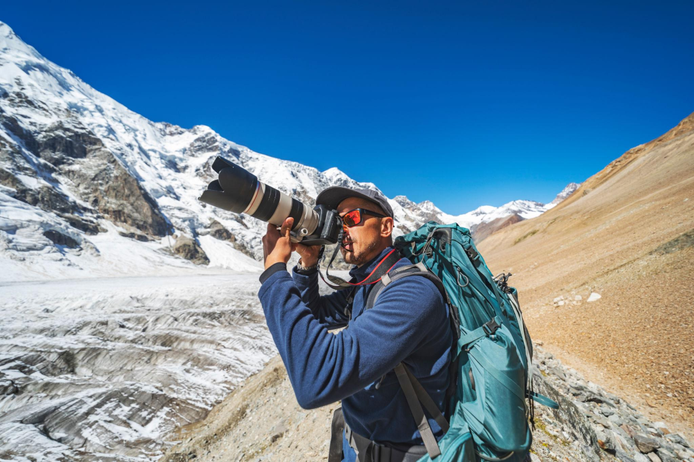
About the Blog: This blog shares exciting mountain expedition stories, famous climbing destinations, trekking experiences and breathtaking mountain photography. It guides readers through different adventures while exploring the beauty and challenges of the world's highest peaks.
Featured article: Journey to the Top of Everest
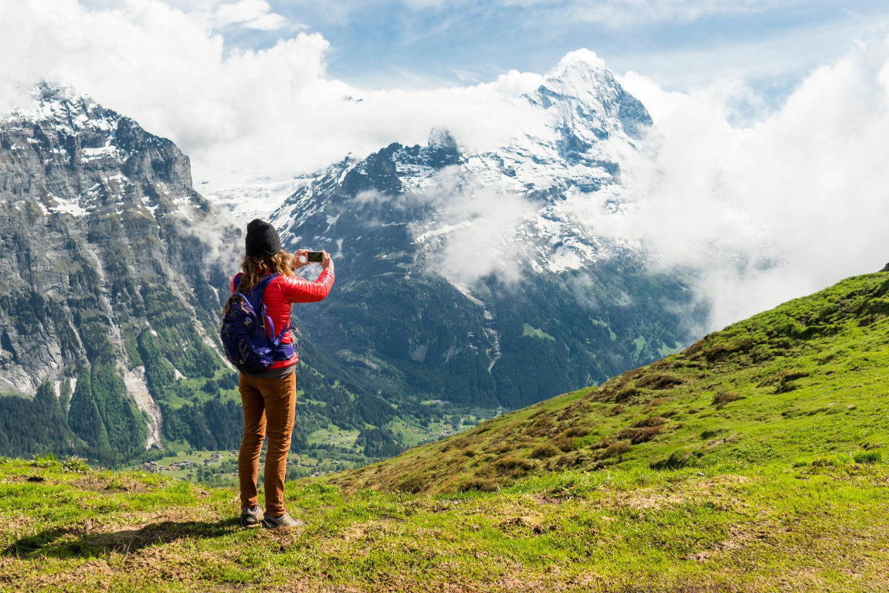
About the Blog: This blog explores beautiful mountain destinations, scenic hiking trails, travel guides and outdoor experiences. It provides readers with useful travel tips, destination recommendations and inspiration for planning their next mountain adventure.
Featured article: Discovering the Beauty of the Swiss Alps
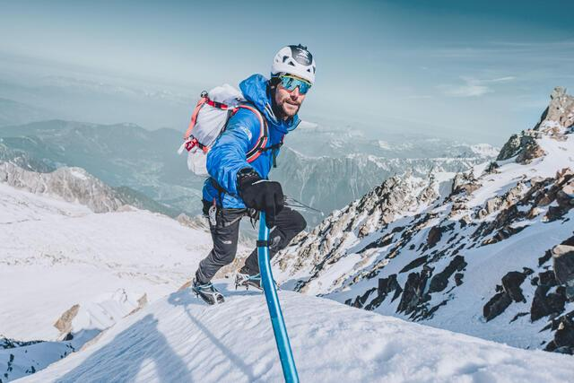
About the Blog: This blog focuses on mountaineering knowledge, climbing techniques, survival skills, safety equipment and high-altitude challenges. It helps readers understand mountain hazards, prepare for difficult expeditions and develop essential climbing skills.
Featured article: Essential Survival Skills Every Mountaineer Needs
Meet the organizations helping people explore, learn and climb in Pakistan's mountains.
About: Pakistan's national mountaineering organization, supporting climbing, trekking and mountain education.
Location: Room 123, Jinnah Stadium, Pakistan Sports Complex, Islamabad
Location: Balach, Chitral, Pakistan
Type: Hiking and trekking club
Activities: Mountain trekking, route exploration, photography and youth adventure activities.
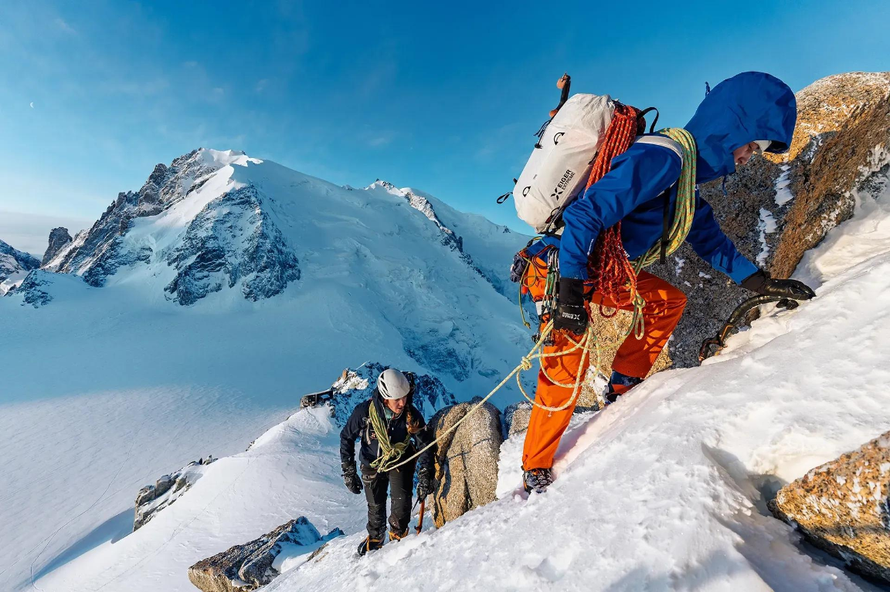
Location: Shakarparian, Islamabad, Pakistan
Type: Outdoor education foundation
Activities: Rock climbing, ice climbing, rope training, outdoor education and mountain rescue training.
Location: Lahore, Pakistan
Type: Mountaineering and adventure travel organization
Activities: Guided treks, mountain expeditions, climbing logistics and northern Pakistan tours.
Leave No Trace principles are fundamental to our program, and we encourage all who climb and trek with us to understand proper wilderness practices. We help facilitate this effort by passing on Leave No Trace training and literature to every Alpine Ascents climber.
Alpine Ascents International leads expeditions that have become benchmarks of quality in the climbing community. We operate what we believe is the finest mountaineering school in the country. This expertise is based upon years of accumulated experience-not just from individual mountain guides, but through experience on particular mountains where details are fine-tuned over time.
Our guides are an integral part of Alpine Ascents because they understand and share our climbing principles. These individuals are dedicated to sharing their excellence with others. Many of our guides have been with Alpine Ascents for over five years, with a handful of veterans working with us for most of their careers. The quality of our Guide Staff is the primary difference between us and our competitors.
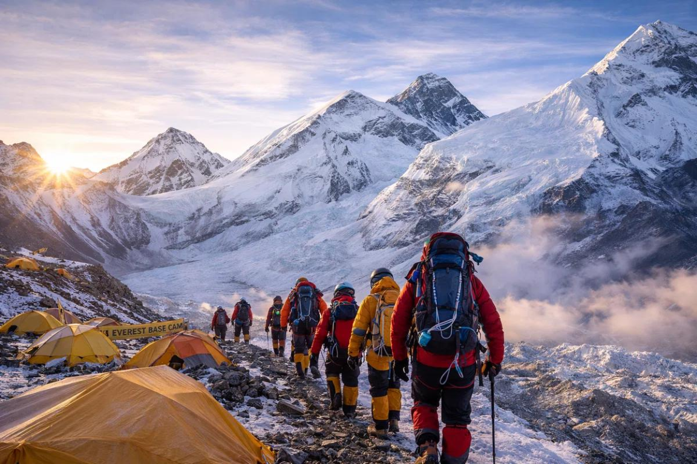
About the Program: This program offers an exciting opportunity to explore the Himalayas and experience high-altitude mountaineering. Participants learn expedition planning, mountain navigation, climbing techniques and altitude acclimatization under professional guidance.
About the Program: This training program helps participants develop essential mountaineering skills through practical mountain activities. It focuses on rope handling, ice axe techniques, glacier travel, climbing safety and emergency procedures.
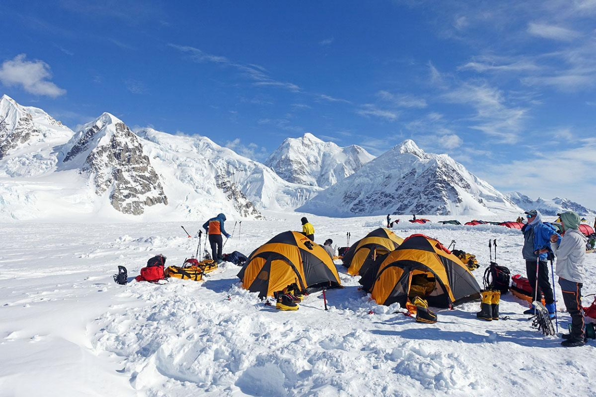
About the Program: This program teaches participants how to survive and stay safe in challenging mountain environments. It covers emergency shelter building, weather awareness, first aid, survival equipment and hazard management.
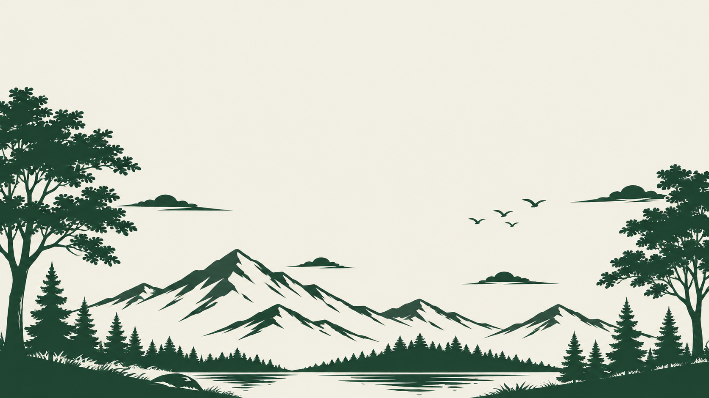